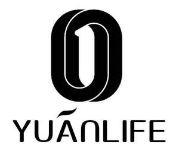

Trade Mark Journal No.2025/038 19 September 2025
UK00004259661 5 September 2025 (9,10,44)

- Class 9
- Data processing apparatus; programmable controllers; audio- and video-receivers; musical instrument digital interface controllers being audio interfaces; apparatus and instruments for physics; hyperbaric oxygen chambers for non-medical purposes; optical apparatus and instruments; respirators for filtering air, not for medical purposes; breathing apparatus, not for medical purposes; oxygen transvasing apparatus; .
- Class 10
- Oxygen concentrators for medical purposes; medical apparatus and instruments; nebulizers for medical purposes; hyperbaric oxygen chambers for medical purposes; medical devices; oxygen inhalators for medical use, sold empty; medical apparatus and instruments for monitoring respiratory disorders; medical apparatus for the treatment of respiratory conditions; apparatus for physical training for medical use; physical exercise apparatus for medical purposes; electric esthetic massage apparatus for household purposes; medical apparatus and instruments for monitoring blood oxygen saturation; .
- Class 44
- Providing health information; dietary and nutritional advice; providing medical information; dietary and nutritional guidance; advisory services relating to health care; consultancy services relating to health care; telemedicine services; medical consultations; providing physical rehabilitation facilities; medical equipment rental; medical information; health counseling; health care; medical services; provision of medical assistance; remote monitoring of medical data for medical diagnosis and treatment; alternative medicine services; analyzing body composition of humans or animals for medical or veterinary purposes; medical assistance consultancy provided by doctors and other specialized medical personnel; physical therapy; aromatherapy services; health consultancy services; health assessment services; medical analysis services for treatment purposes; providing long-term care facilities; healthcare services; managed health care services; providing health care information via a global computer network; medical evaluation services for patients receiving rehabilitation for purposes of guiding treatment and assessing effectiveness; providing home health care services; providing health care information by telephone; physical rehabilitation; health care services for treating Alzheimer's disease; medical services in the field of oncology; hospital services; private hospital services; medical assistance; consultancy services relating to nutrition; individual medical counseling services provided to patients; medical counseling services; medical information services provided via the Internet; providing online information about medical services; medical services in the field of diabetes; .
YIYUAN LONGEVITY TECHNOLOGY (SHENZHEN) CO., LTD.
Representative: Metida Ltd